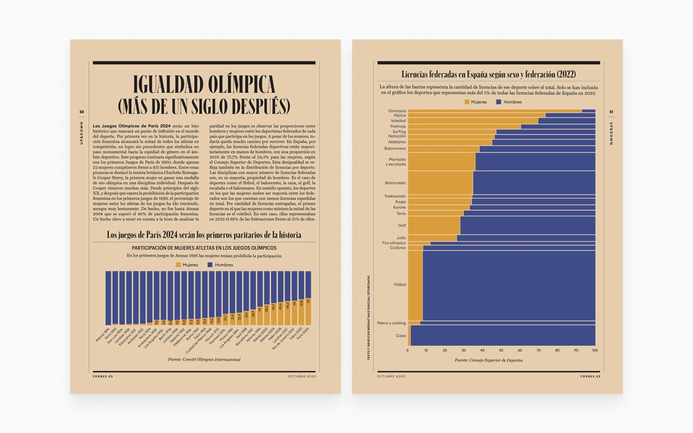
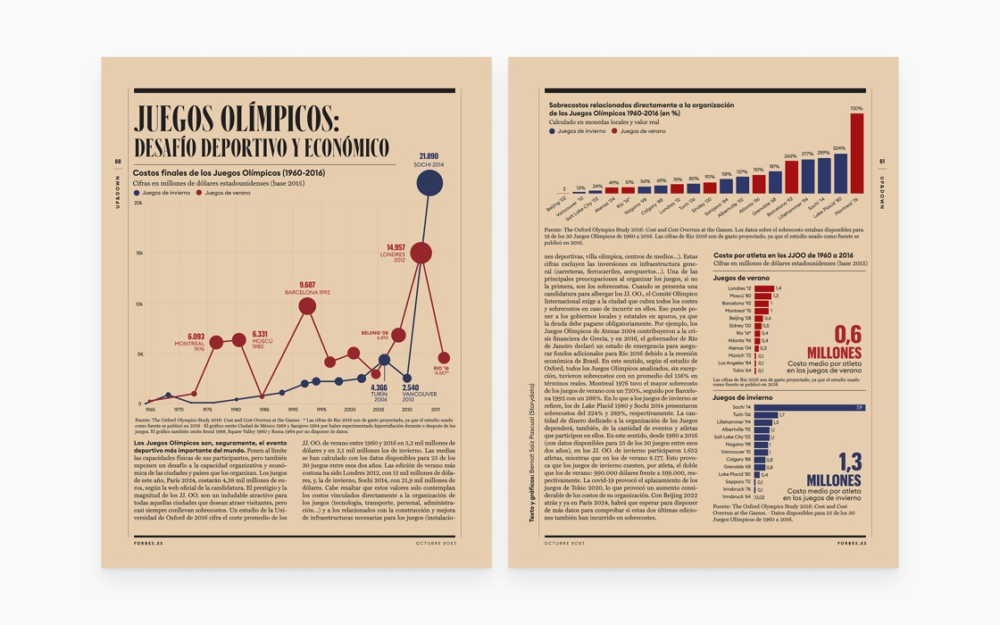
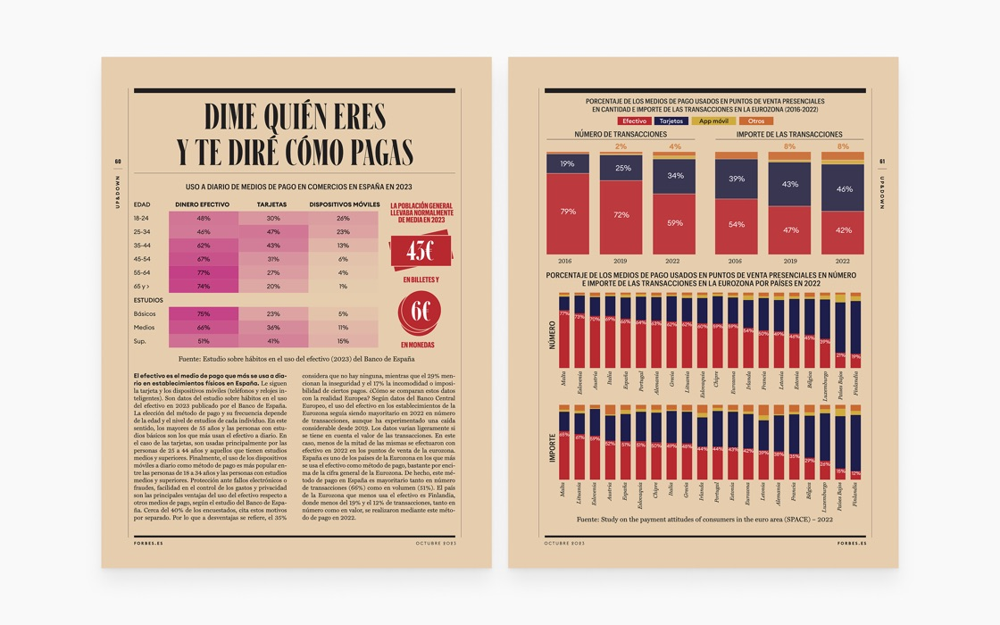

Data journalism for Forbes Spain and Forbes Women
Researched, wrote and designed double-page data articles for Forbes Spain and Forbes Women
- Date
- 2024
- For
- Forbes Spain, Forbes Women
- Role
- Research, data analysis, data visualization, writing, design and layout
- Tools
- Flourish, Datawrapper, Figma, Illustrator and InDesign

"Uphill and unstoppable", a story of the growth of Chinese electric cars in the European market
November 2024
Context
Forbes Spain has a section called "Up&Down", which covers topics related to the economy and the business sector using data. Storydata, a startup from Barcelona, acts as a contractor for the section, as well as for Forbes Women. Based on a brief request from the editors, it carries out the research, data analysis, data visualization, writing, editing and layout design, providing the article ready for publication.
Role
As an intern at Storydata, I authored articles for Forbes Spain and Forbes Women, owning the whole process, from the framing to the final delivery. I carried out the research and data analysis using reports, official sources (open data) and expert sources. I used Flourish, Datawrapper, Figma and Illustrator for the visualizations and InDesign for the final layout.

"Olympian Equality (more than a century later)", a story about the presence of female athletes in the Olympic Games
May 2024

"Olympic Games: an athletic and economic challenge", a story on the economic costs of hosting the Olympic Games
July 2024

"Tell me who you are, and I'll tell you how you pay", a story about the different payment methods used by segments of society
May 2024
The articles shown correspond to the submitted files, and may have changed upon their publication